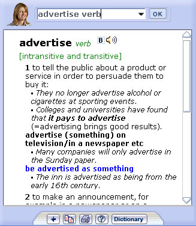

Note: there is no pop-up window in this Mac app — press ⌘K or use Dictionary search instead. What follows describes the original CD-ROM feature.
In web/email Pop Up Mode, the dictionary shrinks to the size of a pop-up window. This feature allows you to refer to the dictionary easily while using another application, such as a word processor, browser, or email package.
To use web/email Pop Up Mode, click on the purple button. In web/email Pop Up Mode, the window will be "always on top" by default, but you can minimize the window when necessary.
Controls are provided at the top of the web/email Pop Up Mode window to let you navigate to the last entry you looked at; copy; print; access this help file; or return to the full-screen dictionary.
You can use the web/email Pop Up Dictionary in these ways:
1. Type (or copy and paste) a word you want to look up in the search box and click OK or press Enter.
2. Move your mouse over a word in another application such as a web browser and the word will automatically be presented in the dictionary. In some applications, you will have to hold your cursor over the word and press the Control key. Click here to see a list of compatible software applications.
Note that the application (e.g. Word or Internet Explorer) has to be active. You can make it active by clicking into the window.
When the dictionary entry appears you can play the sounds of the word by clicking on the speaker icon:
The sound will play in the pronunciation you have selected (American or British) in the full screen dictionary. This is indicated by an A (American) or B (British) as in the image below.

Switching between web/email Pop Up mode and main dictionary mode